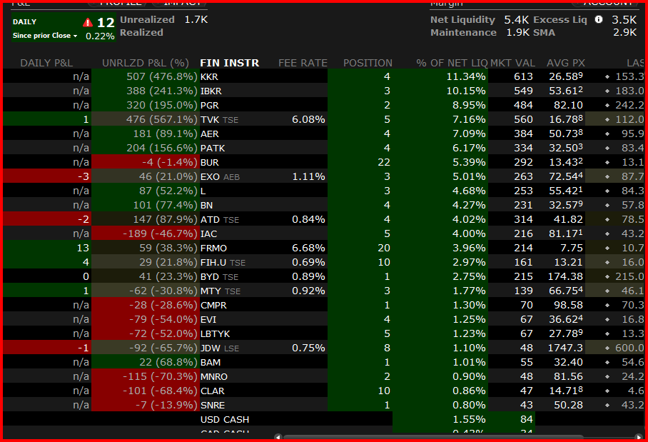
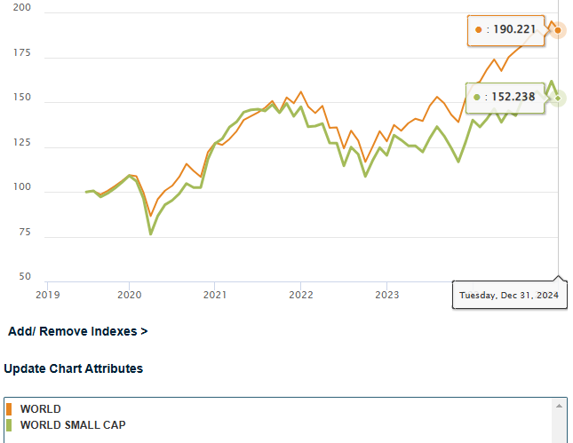

פורסם בתאריך 30.6.2019, עדכון אחרון ב-3.7.2023
התכנים בפוסט זה, כמו כל שאר התכנים בבלוג, הינם תכנים לימודיים במהותם, הם אינם מהווים ייעוץ או המלצה לביצוע פעולה בנייר ערך, ואין לראות בהם תחליף לייעוץ השקעות ו/או ייעוץ פנסיוני המתחשב בצרכיו הייחודיים של כל אדם.
מצד אחד: יואב זליקוביץ, יועץ לקרן הנאמנות איילון מניות גלובלי ומרצה על השקעות ערך.
מצד שני: רונן מרגוליס, מייסד Simplifynance וקהילת המשקיעים הפאסיביים של ישראל.
לקפיצה מהירה לתוצאות ההתערבות לחץ/י כאן.
השקעות מנוהלות מול השקעות פאסיביות - רקע כללי
עולם ההשקעות מתחלק להשקעות מנוהלות, המכונות גם השקעות אקטיביות, ולהשקעות פאסיביות עוקבות מדד מניות. בהשקעה מנוהלת הכוונה לכך שמנהל השקעות בוחר לפי מיטב הבנתו נבחרת מנצחת של מניות שהוא סבור שיצליחו בתקופה הקרובה יותר מאחרות. לעומת זאת, השקעה פאסיבית לא מתיימרות לנבא אילו מניות יצליחו יותר מאחרות, אלא מפזרת את סכום ההשקעה בכמות גדולה מאוד של מניות בפיזור רחב, כל אחת לפי משקלה במדד. השקעה במדד מניות רחב מייצגת ממוצע משוקלל של כל המשק, מכל מגוון הסקטורים.
כיוון שמדד מניות רחב מייצג ממוצע משוקלל של כל המשק, הוא מהווה benchmark (קנה-מידה) להשוואה. אם המדד הוא הממוצע, קרנות מנוהלות שואפות להכות את המדד, כלומר להשיג תשואה עודפת על המדד, או במילים אחרות: להיות טובות מהממוצע. כמובן שבפועל רבות מהקרנות מציגות תוצאות חלשות מהמדד.
קרן עוקבת מדד הינה קרן פשוטה מאוד לניהול: מעצם הגדרת המדד ברור לכולם מהו הרכב המדד (אילו מניות נכללות בו) ומה המשקל היחסי של כל מניה במדד. מנהלי קרנות פאסיביות מבצעים עבודה טכנית בלבד שכוללת "איסוף סחורה" מהשוק לפי המשקל היחסי של כל מניה במדד עבור המשקיעים שרוכשים את יחידות הקרן, וביצוע איזונים קלים כל רבעון לערך. קרנות מנוהלות לעומת זאת, מעסיקות מחלקות מחקר ואנליסטים, אשר בוחנים מניות רבות, קוראים את דו"חות החברות, מנתחים את הסקטורים השונים, משווים את מצב החברות אל מול המתחרות שלהן וכיוצ"ב, מתוך מטרה לבחור את הנבחרת המנצחת שלהם. כל עבודת המחקר והאנליזה הזו עולה כסף שמתבטא בדמי ניהול שגבוהים משמעותית מאלה של הקרנות הפאסיביות, לרוב מדובר על דמי ניהול שנתיים של כ-1-2% לשנה בקרנות המנוהלות לעומת 0.04-0.4% לשנה בקרנות הפאסיביות. בגלל הפער הזה, הקרנות המנוהלות צריכות לא רק להכות את המדד, אלא להכות אותו בהפרש שגבוה מההפרש בדמי הניהול, כדי שיהיה משתלם להשקיע בהן.
עד לפני כשני עשורים מרבית כספי החסכונות של הציבור בארץ ובעולם נוהלו בהשקעות מנוהלות, ובחירת השקעות נחשבה לתחום שדורש מומחיות גבוהה והמשקיע הפרטי המצוי לא היה מבצע השקעות באופן עצמאי. בשנים האחרונות, פורסמו מחקרים רבים שבחנו את הנושא לעומק והשוו את ביצועי הקרנות המנוהלות אל מול המדדים הרלוונטיים, ומצאו מס' ממצאים מעניינים:
1. בתקופות שונות של בין שנה לעשור, יותר מ-70% מהקרנות המנוהלות לא מכות את המדד.
2. גם קרנות שהצליחו יפה מאוד והיכו את המדד באופן עקבי מס' שנים ברצף (אפילו עשור!), בשנים העוקבות הצליחו משמעותית פחות גם בהשוואה למדד וגם בהשוואה למתחרים. במקרים רבים, סביר שההצלחה נבעה ממזל בלבד, והסטטיסטיקה בסוף מתיישרת.
כתוצאה מהחשיפה למחקרים הופיעו בהדרגה קרנות השקעה פאסיביות רבות, ובפרט קרנות סל (ETF-ים). בשנים האחרונות יותר ויותר משקיעים, פרטיים ומוסדיים כאחד, מסיטים את כספם מהשקעות מנוהלות לפאסיביות. מדובר על הסטה של טריליוני דולרים להשקעה פאסיבית שתוארה כ"אחת מנדידות הכספים הגדולות בהיסטוריה".
למרות התוצאות, רבים עדיין מצדדים בבחירת השקעות אקטיבית ממוקדת שכוללת ניתוח חברות לפי גישות ומתודולוגיות שונות, ובפרט השקעות ערך. המצדדים בהשקעות אקטיביות מנוהלות טוענים כי ישנן שיטות שמסוגלות להכות את המדד בעקביות במשך שנים רבות, בעיקר כאשר הקרן מנהלת סכומים לא גדולים במיוחד ויכולה לנצל הזדמנויות בסכומים לא מאוד גבוהים. אחד ההסברים האפשריים לעובדה שקרנות שהצליחו יפה מאוד במשך מס' שנים לא שמרו על הצלחתן לאורך זמן, נובעת מהעובדה שבעקבות ההצלחה בשנים הראשונות, הקרנות גדלו וגייסו כספים נוספים, מה שהקשה עליהן למצוא הזדמנויות השקעה אטרקטיביות. למשל, קרן שמנהלת עשרות מיליוני דולרים יכולה להפיק תשואה משמעותית מהזדמנות השקעה מוצלחת בחברה קטנה באמצעות רכישה של מיליוני דולרים ספורים. לעומת זאת, קרן שמנהלת מיליארדי דולרים ונכנסת לאותה הזדמנות השקעה במיליוני דולרים ספורים, תשיג השפעה שולית בלבד על התשואה הכוללת של הקרן.
הרקע להתערבות
בסוף שנת 2007, וורן באפט, ככל הנראה המשקיע המפורסם והמוצלח בהיסטוריה, התערב עם טד סיידס, מנהל קרן גידור על סכום של מיליון דולר, שקרן פאסיבית זולה שעוקבת אחר מדד ה-S&P 500 (מדד הדגל האמריקאי), תשיג תוצאות טובות יותר מקבוצת קרנות הגידור של סיידס במשך עשור. באפט ניצח בהתערבות כאשר מדד ה-S&P 500 השיג תשואה של כ-85.4%, תוצאה גבוהה משמעותית מקרנות הגידור של סיידס, שהמוצלחת שבהן השיגה תשואה של 62.8% באותה תקופה.

כעת, כשנתיים לאחר סיום ההתערבות של באפט וסיידס, אנחנו, יואב ורונן, מעוניינים לשחזר את ההתערבות הזו, עם שינוי קל בתנאים. עמוד זה יעקוב אחר תשואת התיקים של יואב ושל רונן והתוצאות יעודכנו אחת לחציון.
פרטי ההתערבות
ההתערבות תצא לדרך בחציון השני של 2019 (כלומר ב-1.7.2019) ותימשך עשור. להלן פרטי ההתערבות:
1. תקופת התחרות: 1.7.2019 – 30.6.2029.
2. המתחרים: יואב זליקוביץ ורונן מרגוליס.
3. הפרס לזוכה: המפסיד בתחרות יתרום 1,800 ₪ לעמותת צדקה לבחירת המנצח.
4. אופן הדיווח – תיק מנוהל: יואב יפתח לצורך התחרות חשבון מסחר אמיתי וידווח על מצב התיק באמצעות השוואת שווי התיק ביום הדיווח אל מול שווי התיק בתחילת התחרות.
5. אופן הדיווח – תיק פאסיבי: רונן ידווח על מצב התיק באמצעות דיווח תוצאות המדדים עצמם.
6. דמי ניהול: מהחשבון של יואב יופחתו לצורך חישוב התשואה דמי ניהול בגובה 1.2% לשנה, בניכוי רבעוני של 0.3% מהתיק. מהתיק של רונן לא יופחתו דמי ניהול. עלות דמי ניהול של קרנות אשר עוקבות אחרי המדדים בתיק עומדת על כ-0.25%, וסכום דומה הופחת מדמי הניהול הטיפוסיים בתיקים מנוהלים כדוגמת התיק של יואב, שלרוב גבוהים מ-1.2%.
7. עמלות: כדי לבצע השוואה הוגנת בין התיקים, גובה עמלות הקניה הראשוניות צריך להיות זהה. כיוון שהתיק של רונן מדווח באמצעות מדדים ולכן אינו כולל עמלת קניה, יתווסף לתיק של יואב הסכום של עמלת הקניה הראשונית שלו.
8. מיסים: מיסים על רווחי הון ועל דיבידנדים לא יהיו חלק מחישוב התשואות, אלא אם נוכו במקור.
9. נכסים מותרים: לתיק מנוהל – מניות הנסחרות בבורסה מוכרת בעולם. אין להחזיק בתיק מניה בודדת בהיקף העולה על 20% משווי התיק. לתיק פאסיבי – מדדים וקרנות סל. בשתי האפשרויות חל איסור על שימוש במינוף, נגזרים ואופציות.
10. שינויים בהרכב התיק לאורך תקופת התחרות: יואב לא יוכל להחליף חברות בתיק לאורך תקופת התחרות, וכספי דיבידנדים שיתקבלו יוכלו להיות מושקעים מחדש רק באחת או יותר מהחברות שברשימה. האפשרות היחידה של יואב להחליף חברה בתיק תהיה רק במידה ואותה חברה נרכשה, ובמקרה זה יוכל יואב להשקיע את כספי תמורת המכירה באחת או יותר מהמניות שכבר מצויות בתיקו.
התיק של יואב
התיק של יואב כולל רשימה של 23 מניות ספציפיות שיוחזקו לאורך כל תקופת ההתערבות. יואב בחר בעיקר במניות קטנות יחסית שהוא רואה בהן הזדמנות לתשואה גבוהה. אין לראות ברשימה זו משום המלצה לביצוע פעולה בניירות ערך או לייעוץ השקעות המתחשב בצרכיו הייחודיים של כל אדם.
פרטים אודות המניות שבחר יואב לתיק יופיעו בהדרגה בבלוג שלו. הרשימה המלאה: EXO, JDW, BUR, IBKR, PATK, CKI, BYD.UN, MTY, CLAR, ADT.A, FIH.U, MMAC, LBTYK, CMPR, PGR, BAM, L, EVI, MNRO, KKR, AER, IAC, FRMO.
התיק של רונן
התיק של רונן יכלול שני מדדים בינלאומיים רחבים בחלוקה שווה, המכסים ביחד כ-6,000 מניות מכל רחבי העולם המפותח: 50% מהתיק יוקצה למדד MSCI World Index הכולל כ-1,600 חברות גדולות ובינוניות, ו-50% למדד MSCI World Small Cap Index הכולל כ-4,400 חברות קטנות. מעקב אחר תשואת המדדים יתבצע מתוך מחולל הגרפים של MSCI, באופן שכולל השקעה מחדש של הדיבידנדים במדדים. להלן גרף המציג את ביצועי המדדים ב-15 השנים שקדמו לתחילת התחרות:
מדוע דווקא המדדים הללו? כיוון שמדדי מניות קטנות מספקים תשואה היסטורית (נומינלית) של כ-12% לשנה בממוצע רב-שנתי, ומדדי מניות גדולות מספקים תשואה של כ-10% לשנה בממוצע רב-שנתי, יש היגיון בחשיפה משמעותית של התיק גם למניות קטנות ולא רק למניות גדולות או מניות ענק כמו המניות הכלולות במדד ה-S&P 500 למשל (כמובן שהתשואה העודפת באה ע"ח תנודתיות גבוהה יותר). הסיבה לבחירת שני מדדים ולא מדד גלובלי אחד שכולל גם חברות גדולות וגם קטנות (כדוגמת MSCI World All Cap Index) היא שהמשקל של כמה מאות מניות ענק במדד עולמי אחד מהווה כ-80% מכלל המדד, כך שאלפי חברות קטנות יותר מקבלות חשיפה מאוד נמוכה. לכן, בחר רונן להקצות 50% מהתיק למדד מניות גדולות ו-50% למדד מניות קטנות. אין לראות בתיק זה משום המלצה לביצוע פעולה בניירות ערך או לייעוץ השקעות המתחשב בצרכיו הייחודיים של כל אדם.
תוצאות ההתערבות
התוצאות שלהלן הינן התוצאות המצטברות ממועד תחילת ההתערבות (ה-1.7.2019) ועד ה-2.1.2023. נכון למועד זה:
התיק של יואב השיג תשואה מצטברת של 5.66%.
התיק של רונן השיג תשואה מצטברת של 27.55%.
הפרש התשואות עומד כרגע על 21.89% לזכות התיק של רונן, המהווה קיטון של 4.78% בהפרש התשואות מהחציון הקודם.
סיכום תוצאות התיק של יואב
התיק של יואב התחיל משווי של $3,455, ובנטרול עמלות הקניה החד פעמיות ($158) כמתואר בפרטי ההתערבות שלעיל, עמד על שווי של $3,613. נכון למועד הדיווח התיק עמד על שווי של $3,841, כלומר שווי של $3,999 בנטרול עמלת הקניה, שווי המגלם תשואה ברוטו של 10.68%. בניכוי דמי הניהול המצטברים ($181) עומדת התשואה על 5.66%. הטבלה שלהלן מפרטת את התשואות של כל אחת מהמניות בתיק של יואב.

סיכום תוצאות התיק של רונן
התיק של רונן התחיל משווי של $200 ($100 לכל מדד) ועמד נכון למועד הדיווח על שווי של $255.1, המגלם תשואה של 27.55%. הגרף שלהלן מציג את התשואה של שני המדדים בתיק של רונן.

רוצה לקבל סוף כל סוף את כל הכלים והידע הפרקטי כדי להשקיע בקלות וביעילות את כספיך וחסכונותיך? לחץ/י כאן כדי לראות את שירותי ההדרכה והסיוע במימוש השקעות פאסיביות שאנחנו מציעים.